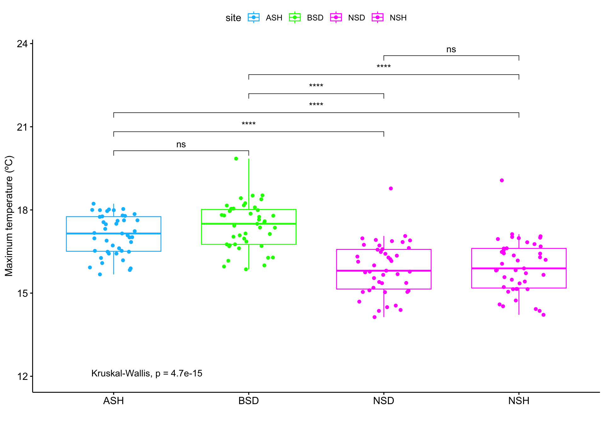

Climate characterization
Last updated: 2023-08-24
Checks: 7 0
Knit directory: ms_pinus_avlasa/
This reproducible R Markdown analysis was created with workflowr (version 1.7.0). The Checks tab describes the reproducibility checks that were applied when the results were created. The Past versions tab lists the development history.
Great! Since the R Markdown file has been committed to the Git repository, you know the exact version of the code that produced these results.
Great job! The global environment was empty. Objects defined in the global environment can affect the analysis in your R Markdown file in unknown ways. For reproduciblity it’s best to always run the code in an empty environment.
The command set.seed(20230720) was run prior to running
the code in the R Markdown file. Setting a seed ensures that any results
that rely on randomness, e.g. subsampling or permutations, are
reproducible.
Great job! Recording the operating system, R version, and package versions is critical for reproducibility.
Nice! There were no cached chunks for this analysis, so you can be confident that you successfully produced the results during this run.
Great job! Using relative paths to the files within your workflowr project makes it easier to run your code on other machines.
Great! You are using Git for version control. Tracking code development and connecting the code version to the results is critical for reproducibility.
The results in this page were generated with repository version 7d00f37. See the Past versions tab to see a history of the changes made to the R Markdown and HTML files.
Note that you need to be careful to ensure that all relevant files for
the analysis have been committed to Git prior to generating the results
(you can use wflow_publish or
wflow_git_commit). workflowr only checks the R Markdown
file, but you know if there are other scripts or data files that it
depends on. Below is the status of the Git repository when the results
were generated:
Ignored files:
Ignored: .DS_Store
Ignored: .Rhistory
Ignored: .Rproj.user/
Ignored: data/geoinfo/.DS_Store
Untracked files:
Untracked: panel_plots.pdf
Unstaged changes:
Modified: data/spei_events.csv
Note that any generated files, e.g. HTML, png, CSS, etc., are not included in this status report because it is ok for generated content to have uncommitted changes.
These are the previous versions of the repository in which changes were
made to the R Markdown (analysis/climate.Rmd) and HTML
(docs/climate.html) files. If you’ve configured a remote
Git repository (see ?wflow_git_remote), click on the
hyperlinks in the table below to view the files as they were in that
past version.
| File | Version | Author | Date | Message |
|---|---|---|---|---|
| Rmd | 7d00f37 | ajpelu | 2023-08-24 | data climate |
| html | 9ffbfcb | ajpelu | 2023-07-21 | Build site. |
| Rmd | 931b1fb | ajpelu | 2023-07-21 | wflow_publish("analysis/climate.Rmd") |
| html | ae82275 | ajpelu | 2023-07-20 | Build site. |
| Rmd | 0b18cf9 | ajpelu | 2023-07-20 | update site |
| html | c8a0b90 | ajpelu | 2023-07-20 | Build site. |
| Rmd | 5c1e533 | ajpelu | 2023-07-20 | climate |
Introduction
We selected the following sites:
- NSH: Nevada P. sylvestris Healthy
- NSD: Nevada P. sylvestris Decline
- BSD: Baza P. sylvestris Decline
- ASH: Almijara P. sylvestris Healthy
Aims
- Explore trends in Annual rainfall and temperatures (tmin, tmed and tmax)
- Compare differences between sites for the climatic parameters
Annual Rainfall
Average values for all the temporal series by site
| site | elevation | mean | sd | se |
|---|---|---|---|---|
| ASH | 1475 | 569.4488 | 237.8596 | 36.27325 |
| BSD | 1596 | 268.2349 | 107.1688 | 16.34308 |
| NSD | 1912 | 314.2395 | 104.7620 | 15.97606 |
| NSH | 1872 | 313.3349 | 112.4571 | 17.14955 |
Site comparison

| Version | Author | Date |
|---|---|---|
| c8a0b90 | ajpelu | 2023-07-20 |
- Posthoc comparison between sites
Comparison of annual rainfall values among sites .y. group1 group2 p p.adj p.format p.signif method prec ASH BSD 0.0000000 0.00 9.4e-15 **** Wilcoxon prec ASH NSD 0.0000000 0.00 1.1e-12 **** Wilcoxon prec ASH NSH 0.0000000 0.00 4.6e-12 **** Wilcoxon prec BSD NSD 0.0100788 0.06 0.010 Wilcoxon prec BSD NSH 0.0170051 0.10 0.017 Wilcoxon prec NSD NSH 0.9794371 1.00 0.979 ns Wilcoxon
Temperatures
Average values for all the temporal series by site
| var | site | elevation | avg | sd | se |
|---|---|---|---|---|---|
| tmax | ASH | 1475 | 17.100581 | 0.7200740 | 0.1098103 |
| tmax | BSD | 1596 | 17.415892 | 0.8382352 | 0.1278297 |
| tmax | NSD | 1912 | 15.887597 | 0.9386248 | 0.1431389 |
| tmax | NSH | 1872 | 15.952132 | 0.9678361 | 0.1475936 |
| tmed | ASH | 1475 | 11.934302 | 0.6254052 | 0.0953734 |
| tmed | BSD | 1596 | 11.634108 | 0.6762941 | 0.1031339 |
| tmed | NSD | 1912 | 10.322674 | 0.7023565 | 0.1071084 |
| tmed | NSH | 1872 | 10.419380 | 0.7252889 | 0.1106055 |
| tmin | ASH | 1475 | 7.106783 | 0.7643215 | 0.1165579 |
| tmin | BSD | 1596 | 6.287015 | 0.7495508 | 0.1143054 |
| tmin | NSD | 1912 | 5.160465 | 0.7390942 | 0.1127108 |
| tmin | NSH | 1872 | 5.238566 | 0.7403480 | 0.1129020 |
Site comparison
Mean temperature

| Version | Author | Date |
|---|---|---|
| c8a0b90 | ajpelu | 2023-07-20 |
- Posthoc comparison between sites
Comparison among sites for Tmed .y. group1 group2 p p.adj p.format p.signif method mean ASH BSD 0.0437766 0.26 0.044 Wilcoxon mean ASH NSD 0.0000000 0.00 < 2e-16 **** Wilcoxon mean ASH NSH 0.0000000 0.00 7.8e-16 **** Wilcoxon mean BSD NSD 0.0000000 0.00 2.4e-13 **** Wilcoxon mean BSD NSH 0.0000000 0.00 4.6e-12 **** Wilcoxon mean NSD NSH 0.4187864 1.00 0.419 ns Wilcoxon
Tmin

| Version | Author | Date |
|---|---|---|
| c8a0b90 | ajpelu | 2023-07-20 |
- Posthoc comparison between sites
Comparison among sites for Tmin .y. group1 group2 p p.adj p.format p.signif method mean ASH BSD 0.0000009 5.6e-06 9.4e-07 **** Wilcoxon mean ASH NSD 0.0000000 0.0e+00 < 2e-16 **** Wilcoxon mean ASH NSH 0.0000000 0.0e+00 < 2e-16 **** Wilcoxon mean BSD NSD 0.0000000 0.0e+00 4.4e-10 **** Wilcoxon mean BSD NSH 0.0000000 0.0e+00 3.4e-09 **** Wilcoxon mean NSD NSH 0.4543421 1.0e+00 0.45 ns Wilcoxon
Tmax

| Version | Author | Date |
|---|---|---|
| c8a0b90 | ajpelu | 2023-07-20 |
- Posthoc comparison between sites
Comparison among sites for Tmax .y. group1 group2 p p.adj p.format p.signif method mean ASH BSD 0.0744959 4.5e-01 0.074 ns Wilcoxon mean ASH NSD 0.0000000 1.0e-07 2.4e-08 **** Wilcoxon mean ASH NSH 0.0000001 5.0e-07 9.0e-08 **** Wilcoxon mean BSD NSD 0.0000000 0.0e+00 1.1e-11 **** Wilcoxon mean BSD NSH 0.0000000 0.0e+00 4.4e-11 **** Wilcoxon mean NSD NSH 0.6487378 1.0e+00 0.649 ns Wilcoxon
Temporal trends analysis
We performed a Mann-Kendall and Then Sen Slope analysis of the trend. The Mann-Kendall test is a nonparametric approach that provides valuable insights into the presence and direction of a trend. Its measure, known as Kendall Tau, ranges between -1 and 1. A positive Kendall Tau indicates an increasing trend, while a negative value suggests a decreasing trend. Additionally, we employed Sen’s Slope estimator to determine the overall slope of the time series. This estimator calculates the median of all slopes between each pair of points in the series, providing a robust and reliable measure of the trend’s magnitude. By employing these methodologies, we were able to thoroughly investigate the trend within the data and provide comprehensive information on its direction, magnitude, and statistical significance.
| var | site | mk_tau | mk_pvalue | sen_estimate | sen_pvalue |
|---|---|---|---|---|---|
| prec | ASH | -0.0609081 | 0.5719835 | -1.1299997 | 0.5719835 |
| prec | BSD | -0.1207087 | 0.2583643 | -1.1720002 | 0.2583644 |
| prec | NSD | 0.0288089 | 0.7935914 | 0.2333333 | 0.7855444 |
| prec | NSH | 0.0132964 | 0.9083452 | 0.1105261 | 0.9000604 |
| tmax | ASH | 0.0843979 | 0.4323823 | 0.0087121 | 0.4324832 |
| tmax | BSD | 0.1662050 | 0.1188940 | 0.0166667 | 0.1214100 |
| tmax | NSD | 0.1274945 | 0.2327955 | 0.0132576 | 0.2247520 |
| tmax | NSH | 0.1307479 | 0.2207556 | 0.0156250 | 0.2247520 |
| tmed | ASH | 0.2418195 | 0.0231246 | 0.0166667 | 0.0225211 |
| tmed | BSD | 0.3362938 | 0.0015709 | 0.0264368 | 0.0015737 |
| tmed | NSD | 0.1851442 | 0.0823077 | 0.0159091 | 0.0861019 |
| tmed | NSH | 0.2083103 | 0.0503309 | 0.0166667 | 0.0515865 |
| tmin | ASH | 0.6005540 | 0.0000000 | 0.0413793 | 0.0000000 |
| tmin | BSD | 0.6071047 | 0.0000000 | 0.0467391 | 0.0000000 |
| tmin | NSD | 0.5285972 | 0.0000007 | 0.0378472 | 0.0000006 |
| tmin | NSH | 0.5144473 | 0.0000013 | 0.0377193 | 0.0000012 |
Detailed climate data
Comparison of the monthly profile of temperatures among study sites
| Version | Author | Date |
|---|---|---|
| 9ffbfcb | ajpelu | 2023-07-21 |
Comparisons of the 2021 and 2022 profiles with the averages
- How did the temperatures in the years 2021 and 2022 differ from the average temperatures recorded during the period from 1980 to 2022?
| Version | Author | Date |
|---|---|---|
| 9ffbfcb | ajpelu | 2023-07-21 |
Temperature and precipitation combined plot
R version 4.2.1 (2022-06-23)
Platform: aarch64-apple-darwin20 (64-bit)
Running under: macOS Monterey 12.3.1
Matrix products: default
BLAS: /Library/Frameworks/R.framework/Versions/4.2-arm64/Resources/lib/libRblas.0.dylib
LAPACK: /Library/Frameworks/R.framework/Versions/4.2-arm64/Resources/lib/libRlapack.dylib
locale:
[1] en_US.UTF-8/en_US.UTF-8/en_US.UTF-8/C/en_US.UTF-8/en_US.UTF-8
attached base packages:
[1] stats graphics grDevices utils datasets methods base
other attached packages:
[1] trend_1.1.4 Kendall_2.2.1 ggpmisc_0.5.2 ggpp_0.5.2
[5] kableExtra_1.3.4 ggpubr_0.6.0 forcats_0.5.2 stringr_1.5.0
[9] dplyr_1.1.1 purrr_1.0.1 readr_2.1.3 tidyr_1.3.0
[13] tibble_3.2.1 ggplot2_3.4.2 tidyverse_1.3.2 workflowr_1.7.0
loaded via a namespace (and not attached):
[1] googledrive_2.0.0 colorspace_2.1-0 ggsignif_0.6.3
[4] ellipsis_0.3.2 rprojroot_2.0.3 fs_1.6.1
[7] rstudioapi_0.14 farver_2.1.1 MatrixModels_0.5-1
[10] bit64_4.0.5 fansi_1.0.4 lubridate_1.9.2
[13] xml2_1.3.3 splines_4.2.1 cachem_1.0.6
[16] knitr_1.41 polynom_1.4-1 jsonlite_1.8.4
[19] broom_1.0.1 dbplyr_2.2.1 compiler_4.2.1
[22] httr_1.4.4 backports_1.4.1 assertthat_0.2.1
[25] Matrix_1.5-1 fastmap_1.1.0 gargle_1.2.1
[28] cli_3.6.1 later_1.3.0 htmltools_0.5.4
[31] quantreg_5.94 tools_4.2.1 gtable_0.3.3
[34] glue_1.6.2 Rcpp_1.0.10 carData_3.0-5
[37] cellranger_1.1.0 jquerylib_0.1.4 vctrs_0.6.2
[40] nlme_3.1-157 svglite_2.1.0 xfun_0.35
[43] ps_1.7.4 rvest_1.0.3 timechange_0.2.0
[46] lifecycle_1.0.3 rstatix_0.7.2 googlesheets4_1.0.1
[49] getPass_0.2-2 MASS_7.3-58.3 scales_1.2.1
[52] vroom_1.6.0 hms_1.1.2 promises_1.2.0.1
[55] parallel_4.2.1 SparseM_1.81 yaml_2.3.7
[58] sass_0.4.5 stringi_1.7.8 highr_0.9
[61] boot_1.3-28 rlang_1.1.1 pkgconfig_2.0.3
[64] systemfonts_1.0.4 evaluate_0.18 lattice_0.20-45
[67] labeling_0.4.2 bit_4.0.4 processx_3.8.0
[70] tidyselect_1.2.0 magrittr_2.0.3 R6_2.5.1
[73] generics_0.1.3 DBI_1.1.3 pillar_1.9.0
[76] haven_2.5.1 whisker_0.4.1 withr_2.5.0
[79] mgcv_1.8-42 survival_3.3-1 abind_1.4-5
[82] modelr_0.1.9 crayon_1.5.2 car_3.1-0
[85] utf8_1.2.3 tzdb_0.3.0 rmarkdown_2.18
[88] grid_4.2.1 readxl_1.4.2 callr_3.7.3
[91] git2r_0.30.1 reprex_2.0.2 digest_0.6.31
[94] webshot_0.5.4 httpuv_1.6.8 extraDistr_1.9.1
[97] munsell_0.5.0 viridisLite_0.4.2 bslib_0.4.2